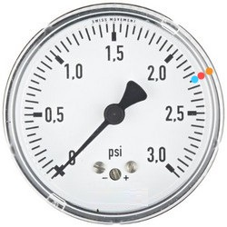
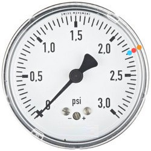

Introduccion A HTML 5 [Estructura, Etiquetas Y Atributos]
Etiquetas
Las etiquetas son codigos muy importantes ya que nos permite agregar elementos en nuestro sitio web desde titulos como lo serian titulos en un libro parrafor cudros entre otros elementos muy utiles
A continucion se mostraran las principales etiqueta que usaremos en este curso se dara el titulo una breve descipccion, una ejemplificacion de su sintaxis y un ejemplo de como se ve esa etiqueta sobre esta pagina es decir se vera plasmada la etiqueta es esta pagina para que puedas ver mas omenos para que puedes utilizarla segun lo que tu quieras hacer con tus proximos proyectos se recomienda que copies las sintaxis en tu editor de texto y compiles para que vayas practicando
Etiquetas H1 H2 H3 H4 H5 H6 [Titulo]
Esta etiqueta nos permite agregar titulos de distintos tamaños donde h1 es el titulo mas grande en tamaño y h6 e el titulo mas pequeño, para valores mayore a 6 o menores a 1 no se respeta el tamaño y solo muestra el texto, su nomenclatura es la siguiente:
<h1> Tiulo Que Sequiere Agregar </h1>
A continuacion de mostraran las sintaxis con los distintos tamaños y su visualizacion en directo
<h1> Ejemplo Este Usa H1 </h1>
<h2> Ejemplo Este Usa H2 </h2>
<h3> Ejemplo Este Usa H3 </h3>
<h4> Ejemplo Este Usa H4 </h4>
<h5> Ejemplo Este Usa H5 </h5>
<h6> Ejemplo Este Usa H6 </h6>
<h4> Ejemplo Este Usa H4 </h4>
<h5> Ejemplo Este Usa H5 </h5>
<h6> Ejemplo Este Usa H6 </h6>
<h6> Ejemplo Este Usa H6 </h6>
Etiqueta P [Parrafo]
Esta etiqueta nos permite crear parrafos tal como en un libro su estilo no esta en negrita como en el titulo y su tamaño junto a su estilo lo diferencia del titulo un uso podria ser una descripcion en tu pagina web o un resumen, su nomenclatura es la siguiente:
<p> Este es un texto podria ser muy extenso pero para este ejemplo se limitara hasta aqui </p>
A continuacion de mostraran las sintaxis y su visualizacion en directo
<p> Esta es la visualizacion de la etiqueta P de echo es la misma que en las descrpciones ya que use la etiqueta de parafo para las descripciones </p>
Etiqueta BR [Salto De Linea]
Esta etiqueta nos permite hacer saltos de linea tal como en programacion lo aria un /n o cuando tu profeso te dice punto y aparte es util en parrafor o al crear listas ya que en ves de crear varios parrafos puedes colocar esta etiqueta entre las etiquetas dentro del contenido del parrafo para hacer varios saltos su sintaxis es la siguiente:
</br>
En este ejemplo plasmado se tiene un lista de tres temas vistos usandos un solo parrafo en ves de tres gracias al </br>
* Titulos con H1,H2,H3,H4,H5,H6
* Parafor con P
* Saltos de linea con BR
Etiqueta HREF [Links]
Esta estiqueta nos permite crear links para dirigrnos a otras paginas ya sean propias o ajenas podrias usarlo para promocionar tu sitio enviandolos a un registro de cuentas entreo otras cosas, y su nomenclatura es la siguiente :
<a href = "http://www.cualquier-direccion.com.mx">Texto Puede Ser Distinto Al Link </p>
Ademas tambien podemo usar Href para correor electronico por si queremo mandar avisos a cierto usuarios su nomnclatura se compone de
<a href = "http://www.cualquier-direccion.com.mx">Texto Puede Ser Distinto Al Link </p>
Este Link Abre Una Nueva Pestaña
Link Para Correo Electronico
Etiqueta IMG [Imagenes]
Esta estiqueta nos permite insertar imagenes usando su ubicacion sea url o ruta donde se encuentra, este elemento muy util para hacer que nuestra pagina sea mucho mas llamativa o descriptivaa continuacion se mustra su nomenclatura o sintaxix :
<img src = "direccion/donde/se/encuentra/la/imagen/imagen.png";/>
 

Etiquetas De Formato De Texto [Imagenes]
Estas estiquets como el subtema lo dice permite aplicar formatos al texto desde negritas cursivas subrayado etc util para das una mejor presentacion a tus articulos o textos que quieras mostrar en la web esta etiquetas van dentro de las etiquetas que muestran texto ya sean párrafor o titulos y la sintaxis es la siguiente :
<P> <B> Aplica </B> </P>
<P> <STRONG> Aplica </STRONG> </P>
<P> <I> Aplica </I> </P>
<P> <EM> Aplica </EM> </P>
<P> <SMALL> Aplica </SMALL> </P>
<P> <MARK> Aplica </MARK> </P>
<P> <DEL> Aplica </DEL> </P>
<P> <INS> Aplica </INS> </P>
<P> <SUB> Aplica </SUB> </P>
<P> <SUP> Aplica </SUP> </P>
Texto En Negritas
Texto Marcado Como Importante
Texto En Italica Texto Enfatizado
Texto Pequeño Texto Marcado
Texto Insertado
Texto SubIndice
Texto SupIndice
Texto Eliminado